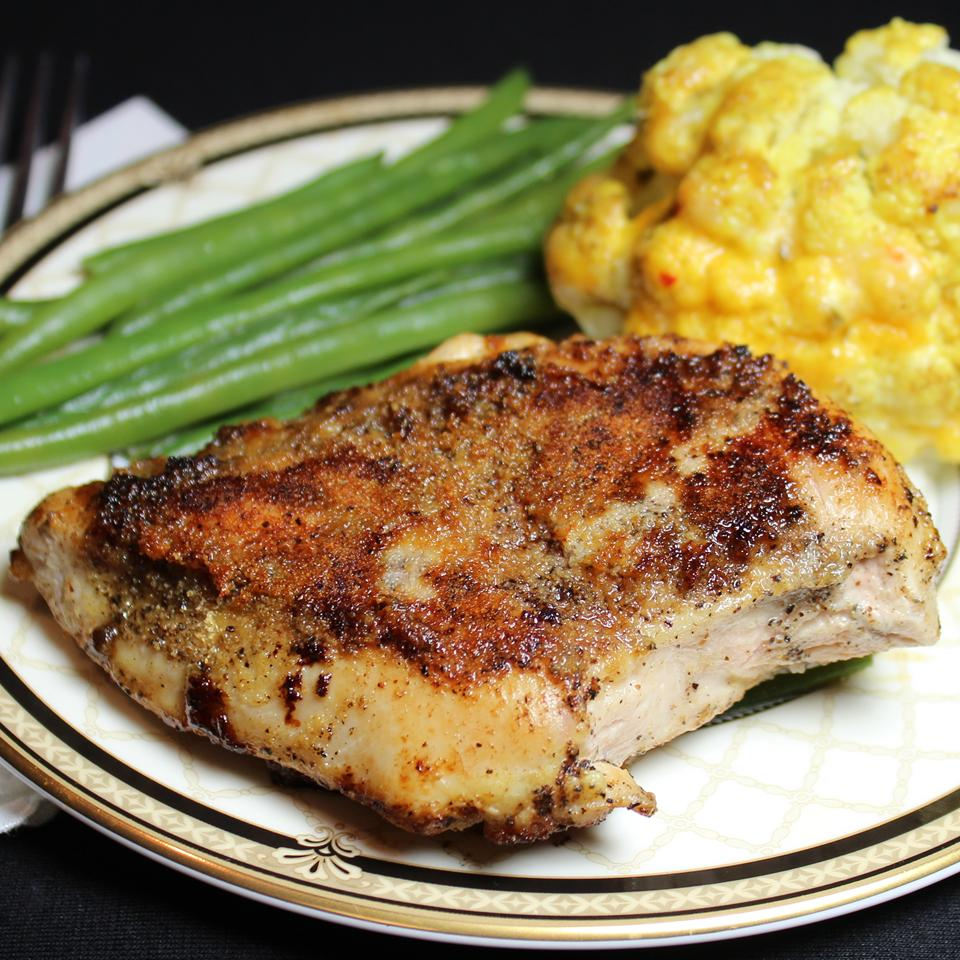

Lemon Garlic Chicken

Ingredients
- 2 tablespoons butter
- 3 skinless, boneless chicken breast halves
- 1½ teaspoons salt
- 1 ½ teaspoons ground black pepper
- 2 tablespoons garlic powder
- 1 lemon, juiced
Steps
- Melt butter in a skillet over medium-high heat.
- Season chicken with salt and pepper; place in the melted butter. Cook chicken, flipping frequently, until browned, about 5 minutes. Sprinkle 1 tablespoon garlic powder over chicken; flip and sprinkle 1 tablespoon garlic powder on second side. Cook each side for 2 minutes.
- Pour lemon juice over each side of chicken and cook until no longer pink in the center, 5 to 10 minutes more. An instant-read thermometer inserted into the center should read at least 165 degrees F (74 degrees C).